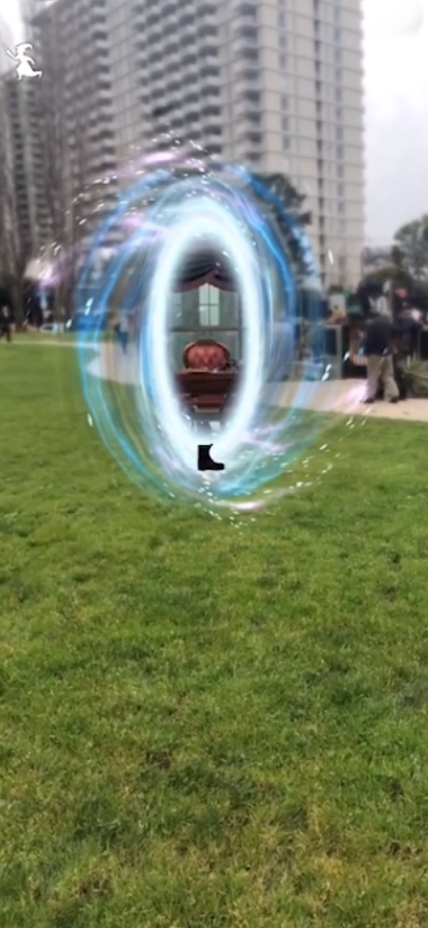

Guest
AR Portal
Next Empire Arcade The arcade is een app waar je door middel van AR een soort portal creëert. Zelf vind ik dit een super vet idee. Één omdat ik al een Stranger Things fan ben en twee AR heel tof vind. In The Arcade moet de gebruiker een portal neerzetten op de grond. Hiermee komen er een aantal virtuele objecten tevoorschijn. Een aantal arcade machines en de portal. De portal lijkt op een deur en kan je er fysiek doorheen lopen. Zodra je door de portal bent beland je in the upside down. Een andere dimensie uit de serie. In de hoorcollege wordt verteld dat dit een experiment is en het al een tijd geleden is dat het werd uitgebracht. Het had niet een gericht doel behalve dat het werd gebruikt als test van de toen nieuwe ARkit van Apple.
De sensoren die worden gebruikt zijn de camera, accelerometer en gyroscope. Hiermee kan je zien waar je bent, wordt er bepaald hoe je de telefoon houdt en waar je overal heen loopt. Het gebruik van de app is erg makkelijk. Je hebt alleen een telefoon nodig waar je de app op kan draaien. En verder niks. Dit maakt het naar mijn mening leuker ook omdat je geen knoppen of controllers hoeft te gebruiken om toch een leuke app te maken. Dat is voor mij een belangrijk punt in de wereld van HCI. Een ander voorbeeld van een soortgelijke app is de Harry Potter Wizards Unite app. Hier plaats een een portkey en creëer je een andere wereld om je heen. Je moet met je camera dan rondkijken om alles te vinden. In deze wereld verzamel je items die je later kan gebruiken.